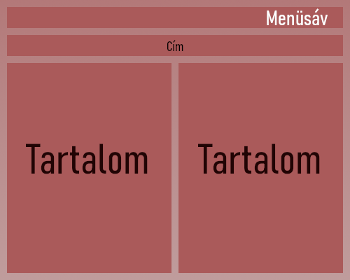

Nem terveztem bonyolult elrendezést, ezért egy egyszerű fejléc-tartalom mintát választottam.
Egy letisztult design volt a célom. Összességében sikerült megvalósítani azt, amit szerettem volna.

Nehézségek
Nem sikerült megfelelően beosztani az időmet, a feladatot hamarabb kellett volna elkezdenem megvalósítani, talán úgy egy összetettebb weboldalt sikerült volna programozni.
Ami problémák felmerültek, azokra a segítségül szolgáló weblapon megtaláltam a megoldást.
Láblécet nem sikerült az elképzelések szerint készítenem, de semmi szükséges információt nem helyeztem volna el benne, ezért úgy döntöttem, kihagyom.
Illetve előfordult, hogy a böngésző nem jelenítette meg a kódban tett változásokat, annak ellenére, hogy a fájlokat elmentettem és az oldalt frissítettem.